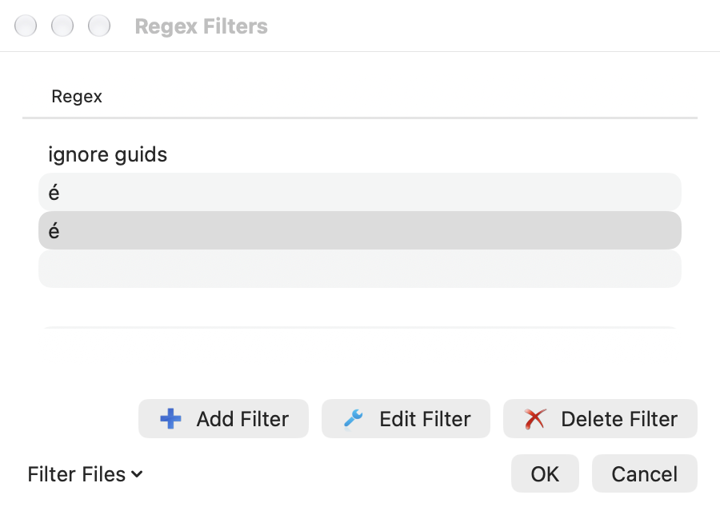
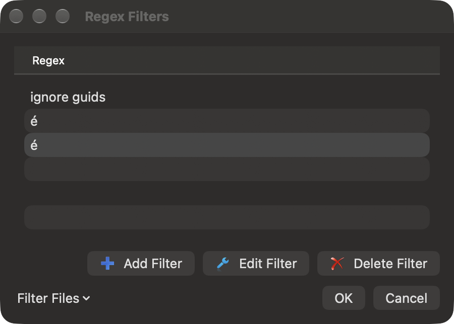

Merge comparison filters
Regex filters ignore matching text when comparing lines. They do not rewrite the source panes or the saved file. For example, ignore generated identifiers or build numbers while reviewing other changes. Choose Regex Filter in Compare or Merge, then choose a named filter. No Filter restores ordinary comparison. Changing filters can ask you to save or discard unsaved work.
A fresh filter library includes TortoiseGit's ignore guids preset. It replaces GUIDs with a common comparison key. The name is a literal source preset name, independent of the application language. Existing saved libraries are retained; deleting every filter and saving an empty library keeps it empty.
Open the filter list from the comparison's Regex Filter menu. Add, edit or delete
filters there. Each definition has a name, a regular expression and replacement.
Expressions use the existing ECMAScript engine; replacements can use capture
references such as $1. The filter runs separately on each line. The original
text remains available for viewing, copying and merge choices.
Move filters between installations
In the filter list, choose Filter Files → Import Filters…, then select a
regexfilters.ini file. All expressions are checked before the draft changes.
Imported names replace matching existing names; other filters remain. Names match
without ASCII letter case. Unicode spellings retain their distinct identity.
Choose OK to save the completed draft, or Cancel to discard it.
Filter Files → Export Filters… saves the complete current draft to an INI file, including edits you have not yet saved with OK. Export does not apply those edits to the application's saved library. Cancelling a file chooser writes nothing. The import source is never modified.
For example:
[ignore build numbers]
regex=build [0-9]+
replace=build
Imports support UTF-8 and Unicode files with a byte-order mark, up to 1 MiB and 256 filters per file. Export writes UTF-8 with a BOM and Windows-compatible line endings. Backslashes and replacement characters remain literal INI values. Only the filter names, expressions and replacements are exported, rather than preserving the input file's comments or unrelated keys.
Convert a legacy Windows ANSI file to UTF-8 before importing it. The supported INI format stores each value on one line. Export reports values with line breaks or surrounding whitespace instead of silently changing them. Those definitions remain available in the native saved library.
While a read or export is running, the list blocks edits and ordinary Close. Cancel operation cancels a read or pending write; an atomic export already being published may finish. Errors leave the draft available for correction.


The two visually identical accented names in these captures deliberately use different Unicode spellings. They remain separate sections and menu choices. Complete physical picker/keyboard/accessibility and signed sandbox acceptance remain open. See the source parity notes.